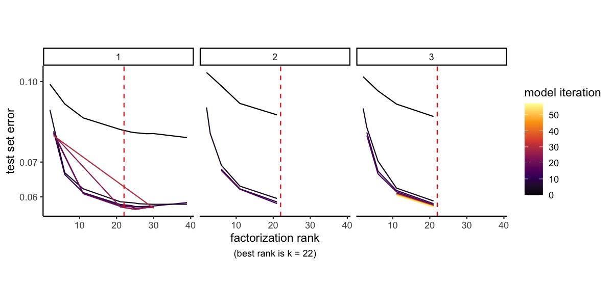
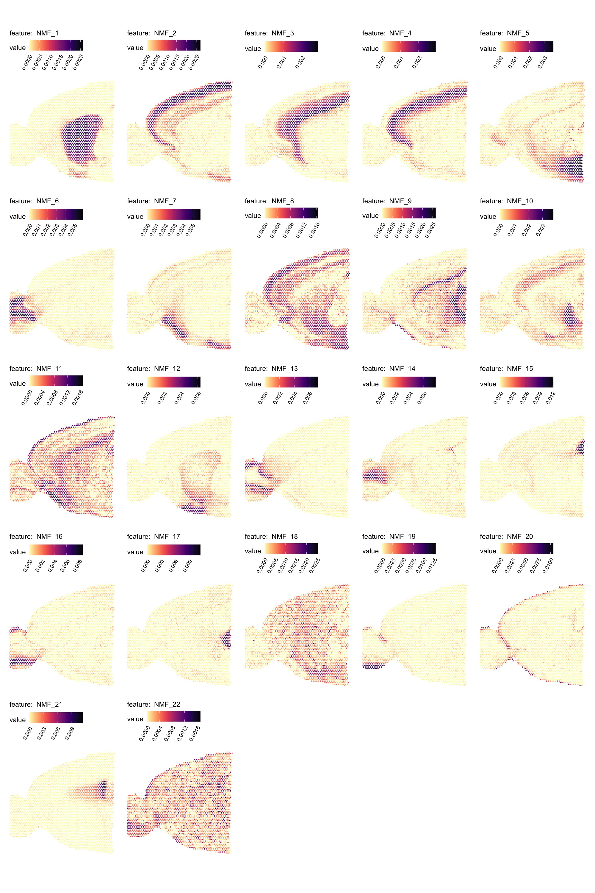
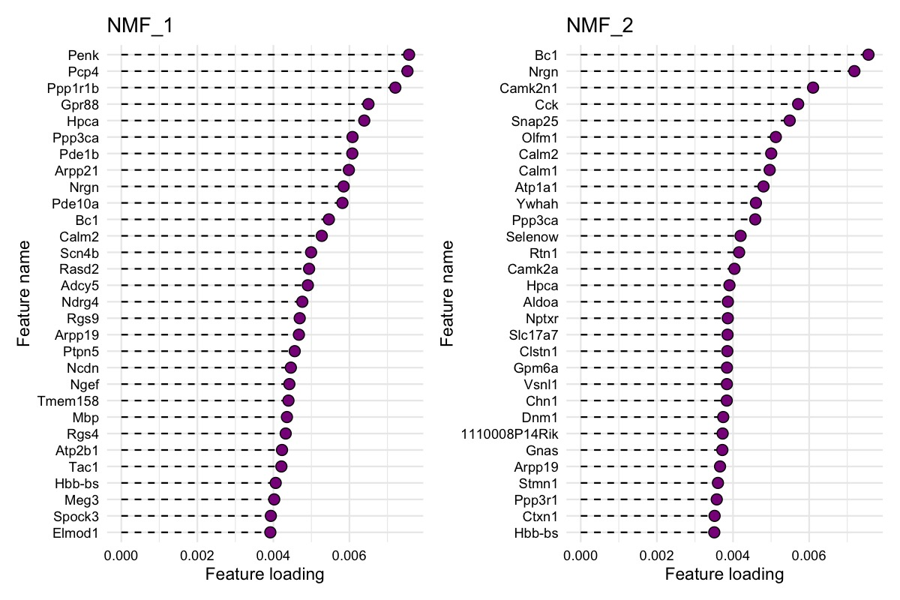
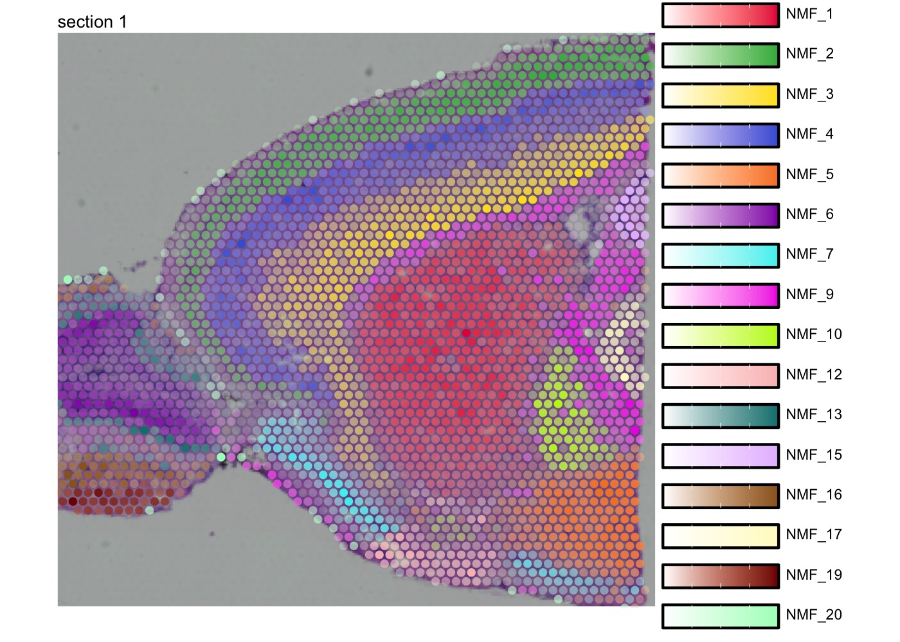
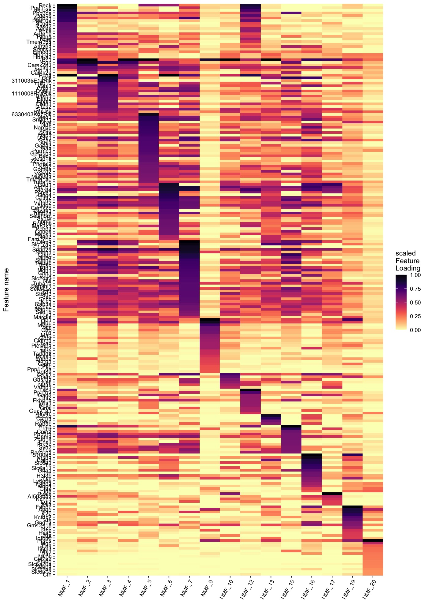

Non-negative matrix factorization
Last compiled: 26 September 2023
NNMF.RmdNon-negative matrix factorization (NNMF or NMF) can be a useful
technique to deconvolve 10x Visium data, in particular when a reference
single-cell RNA-seq data is not available to conduct cell type
deconvolution. In this vignette we will demonstrate how you can apply
this method with semla on spatial data.
We recommend using the singlet R package for
NNMF which handles Seurat objects. singlet
uses the ultra fast NNMF implementation from RcppML. Both of these
packages are developed by Zach DeBruines lab and you can find more
information about their work and tools at https://github.com/zdebruine and https://www.zachdebruine.com/.
RcppML is available on CRAN
and GitHub, and
singlet can be installed from GitHub with
devtools::install_github("zdebruine/singlet").
Run NMF
We’ll use a mouse brain Visium data set provided in
SeuratData for the NNMF. The method automatically runs
cross-validation to find the best rank and learns a model at that
rank.
The factorization can be computed on all genes, but below we have filtered the data to include only the top variable features to speed up the computation.
# Here we'll use an example data set provided in SeuratData
se_mbrain <- LoadData("stxBrain", type = "anterior1")
# Update se_mbrain for compatibility with semla
se_mbrain <- UpdateSeuratForSemla(se_mbrain)
# Normalize data and find top variable features
se_mbrain <- se_mbrain |>
NormalizeData() |>
FindVariableFeatures()
# OPTIONAL: subset data to improve computational speed
se_mbrain <- se_mbrain[VariableFeatures(se_mbrain), ]
# Set seed for reproducibility
set.seed(42)
se_mbrain <- RunNMF(se_mbrain)
k <- ncol(se_mbrain@reductions$nmf@feature.loadings)We can plot the cross-validation results and find that the optimal rank decided by the method is 22, which determines the number of factors we obtain from the NMF run.
RankPlot(se_mbrain)
Spatial visualization
The results are stored as a DimReduc object in our
Seurat object and we can map the factors spatially with
MapFeatures().
MapFeatures(se_mbrain,
features = paste0("NMF_", 1:22),
override_plot_dims = TRUE,
colors = viridis::magma(n = 11, direction = -1)) &
theme(plot.title = element_blank())
Explore gene contributions
We can also investigate the gene loadings for each factor with
PlotFeatureLoadings() which will give us an idea about what
the top contributing genes for each factor are. Below we can see the top
30 contributing genes for NMF_1 and NMF_2.
PlotFeatureLoadings(se_mbrain,
dims = 1:2,
reduction = "nmf",
nfeatures = 30,
mode = "dotplot",
fill = "darkmagenta",
pt_size = 3)
Make composite plot
We can also map multiple factors spatially in a single plot with
MapMultipleFeatures(). Note that the visualization will
only display the most dominant factor for each spot. See
?MapMultipleFeatures() for details.
se_mbrain <- LoadImages(se_mbrain)
factor_colors <- c('#e6194b', '#3cb44b', '#ffe119', '#4363d8', '#f58231',
'#911eb4', '#46f0f0', '#f032e6', '#bcf60c', '#fabebe',
'#008080', '#e6beff', '#9a6324', '#fffac8', '#800000', '#aaffc3')
# Select non-overlapping factors
selected_factors <- c(1, 2, 3, 4, 5, 6, 7, 9, 10, 12, 13, 15, 16, 17, 19, 20)
MapMultipleFeatures(se_mbrain,
features = paste0("NMF_", selected_factors),
colors = factor_colors,
image_use = "raw",
override_plot_dims = TRUE,
pt_size = 2)
Explore gene contributions (heatmap)
Similarly, we can also summarize the top feature loadings for each factor with a heatmap:
PlotFeatureLoadings(se_mbrain,
dims = selected_factors,
reduction = "nmf",
nfeatures = 30,
mode = "heatmap",
gradient_colors = viridis::magma(n = 11, direction = -1))
Functional Enrichment Analysis (FEA)
If you want to get the feature loading values for each factor, you
can extract them from the DimReduc object. This can for
example be useful to run Functional Enrichment Analysis (FEA).
# fetch feature.loadings from DimReduc object
nmf_loadings <- se_mbrain[["nmf"]]@feature.loadings
# Convert to long format and group data by factor
gene_loadings_sorted <- nmf_loadings |>
as.data.frame() |>
tibble::rownames_to_column(var = "gene") |>
as_tibble() |>
tidyr::pivot_longer(all_of(colnames(nmf_loadings)), names_to = "fctr", values_to = "loading") |>
mutate(fctr = factor(fctr, colnames(nmf_loadings))) |>
group_by(fctr) |>
arrange(fctr, -loading)
# Extract top 10 genes per factor
gene_loadings_sorted |>
slice_head(n = 10)## # A tibble: 220 × 3
## # Groups: fctr [22]
## gene fctr loading
## <chr> <fct> <dbl>
## 1 Penk NMF_1 0.00757
## 2 Pcp4 NMF_1 0.00753
## 3 Ppp1r1b NMF_1 0.00721
## 4 Gpr88 NMF_1 0.00650
## 5 Hpca NMF_1 0.00639
## 6 Ppp3ca NMF_1 0.00608
## 7 Pde1b NMF_1 0.00608
## 8 Arpp21 NMF_1 0.00598
## 9 Nrgn NMF_1 0.00585
## 10 Pde10a NMF_1 0.00582
## # ℹ 210 more rowsRun functional enrichment analysis on top 10 genes from factor 1:
library(gprofiler2)
# Get gene sets
gene_set_nmf_1 <- gene_loadings_sorted |>
filter(fctr == "NMF_1") |>
slice_head(n = 10)
# Run FEA
fea_results_nmf_1 <- gost(query = gene_set_nmf_1$gene, ordered_query = TRUE, organism = "mmusculus", sources = "GO:BP")$result |>
as_tibble()
# Look at results
fea_results_nmf_1 |> select(p_value, term_size, query_size, intersection_size, term_name)## # A tibble: 23 × 5
## p_value term_size query_size intersection_size term_name
## <dbl> <int> <int> <int> <chr>
## 1 0.0000825 36 7 3 response to amphetamine
## 2 0.000265 250 7 4 locomotory behavior
## 3 0.000301 188 9 4 learning
## 4 0.000302 55 7 3 response to amine
## 5 0.000384 1329 8 6 response to abiotic stimulus
## 6 0.000885 417 6 4 response to salt
## 7 0.00214 760 9 5 behavior
## 8 0.00264 324 9 4 learning or memory
## 9 0.00342 475 7 4 response to radiation
## 10 0.00401 360 9 4 cognition
## # ℹ 13 more rowsPackage versions
semla: 1.1.6RcppML: 0.5.6singlet: 0.99.27
Session info
## R version 4.2.3 (2023-03-15)
## Platform: x86_64-apple-darwin17.0 (64-bit)
## Running under: macOS Big Sur ... 10.16
##
## Matrix products: default
## BLAS: /Library/Frameworks/R.framework/Versions/4.2/Resources/lib/libRblas.0.dylib
## LAPACK: /Library/Frameworks/R.framework/Versions/4.2/Resources/lib/libRlapack.dylib
##
## locale:
## [1] en_US.UTF-8/en_US.UTF-8/en_US.UTF-8/C/en_US.UTF-8/en_US.UTF-8
##
## attached base packages:
## [1] stats graphics grDevices datasets utils methods base
##
## other attached packages:
## [1] stxBrain.SeuratData_0.1.1 SeuratData_0.2.2
## [3] singlet_0.99.27 RcppML_0.5.6
## [5] semla_1.1.6 ggplot2_3.4.3
## [7] dplyr_1.1.3 SeuratObject_4.1.3
## [9] Seurat_4.3.0.1
##
## loaded via a namespace (and not attached):
## [1] fastmatch_1.1-4 systemfonts_1.0.4 plyr_1.8.8
## [4] igraph_1.5.1 lazyeval_0.2.2 sp_2.0-0
## [7] splines_4.2.3 BiocParallel_1.32.6 listenv_0.9.0
## [10] scattermore_1.2 digest_0.6.33 htmltools_0.5.6
## [13] magick_2.7.4 fansi_1.0.4 magrittr_2.0.3
## [16] memoise_2.0.1 tensor_1.5 cluster_2.1.4
## [19] ROCR_1.0-11 limma_3.54.2 globals_0.16.2
## [22] matrixStats_1.0.0 pkgdown_2.0.7 spatstat.sparse_3.0-2
## [25] colorspace_2.1-0 rappdirs_0.3.3 ggrepel_0.9.3
## [28] textshaping_0.3.6 xfun_0.40 crayon_1.5.2
## [31] jsonlite_1.8.7 progressr_0.14.0 spatstat.data_3.0-1
## [34] zeallot_0.1.0 survival_3.5-7 zoo_1.8-12
## [37] glue_1.6.2 polyclip_1.10-4 gtable_0.3.4
## [40] leiden_0.4.3 future.apply_1.11.0 msigdbr_7.5.1
## [43] abind_1.4-5 scales_1.2.1 spatstat.random_3.1-5
## [46] miniUI_0.1.1.1 Rcpp_1.0.11 viridisLite_0.4.2
## [49] xtable_1.8-4 reticulate_1.31 htmlwidgets_1.6.2
## [52] httr_1.4.7 fgsea_1.24.0 RColorBrewer_1.1-3
## [55] ellipsis_0.3.2 ica_1.0-3 pkgconfig_2.0.3
## [58] sass_0.4.7 uwot_0.1.16 deldir_1.0-9
## [61] utf8_1.2.3 tidyselect_1.2.0 rlang_1.1.1
## [64] reshape2_1.4.4 later_1.3.1 munsell_0.5.0
## [67] tools_4.2.3 cachem_1.0.8 cli_3.6.1
## [70] dbscan_1.1-11 generics_0.1.3 ggridges_0.5.4
## [73] evaluate_0.21 stringr_1.5.0 fastmap_1.1.1
## [76] yaml_2.3.7 ragg_1.2.5 goftest_1.2-3
## [79] babelgene_22.9 knitr_1.43 fs_1.6.3
## [82] fitdistrplus_1.1-11 purrr_1.0.2 RANN_2.6.1
## [85] pbapply_1.7-2 future_1.33.0 nlme_3.1-163
## [88] mime_0.12 compiler_4.2.3 plotly_4.10.2
## [91] png_0.1-8 spatstat.utils_3.0-3 tibble_3.2.1
## [94] bslib_0.5.1 stringi_1.7.12 desc_1.4.2
## [97] forcats_1.0.0 lattice_0.21-8 Matrix_1.5-1
## [100] shinyjs_2.1.0 vctrs_0.6.3 pillar_1.9.0
## [103] lifecycle_1.0.3 BiocManager_1.30.22 spatstat.geom_3.2-4
## [106] lmtest_0.9-40 jquerylib_0.1.4 RcppAnnoy_0.0.21
## [109] data.table_1.14.8 cowplot_1.1.1 irlba_2.3.5.1
## [112] httpuv_1.6.11 patchwork_1.1.3 R6_2.5.1
## [115] promises_1.2.1 renv_1.0.2 KernSmooth_2.23-22
## [118] gridExtra_2.3 parallelly_1.36.0 codetools_0.2-19
## [121] MASS_7.3-60 rprojroot_2.0.3 withr_2.5.0
## [124] sctransform_0.3.5 parallel_4.2.3 grid_4.2.3
## [127] tidyr_1.3.0 rmarkdown_2.24 Rtsne_0.16
## [130] spatstat.explore_3.2-1 shiny_1.7.5